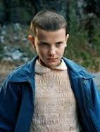
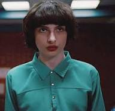
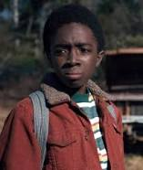
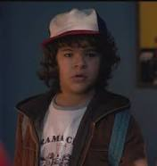
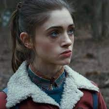
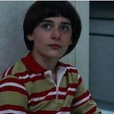
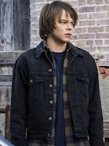

Um grupo de amigos se envolve em uma série de eventos sobrenaturais na pacata cidade de Hawkins. Eles enfrentam criaturas monstruosas, agências secretas do governo e se aventuram em dimensões paralelas.
◊ Elenco e Personagens ◊
• Millie Bobby Brown •

Atua como Onze uma misteriosa criança com vocabulário limitado e poderes telecinéticos. Foi encontrada por Dustin, Mike e Lucas, que passaram a ser seus amigos.
• Finn Wolfhard •

Atua como Mike Wheeler o filho de Karen, irmão mais novo de Nancy e um dos três amigos de Will. Mike é mostrado como um estudante inteligente e consciente, além de ser muito comprometido com seus amigos.
• Caleb McLaughlin •

Atua como Lucas Sinclair integrante da turma de amigos que inclui Mike, Will e Dustin. Ele é corajoso, independente e carismático.
• Gaten Matarazzo •

Atua como Dustin Henderson integrante do grupo de amigos que inclui Mike, Will, e Lucas. Dustin é um fã de quadrinhos e possui um excelente raciocínio lógico. Ele sofre de displasia cleidocraniana e não tem os dentes da frente permanentes, o que lhe causa sigmatismo.
• Natalia Dyer •

A filha de Karen Wheeler, irmã mais velha de Mike, e namorada de Steve Harrington. Aparentemente tradicional, Nancy tenta equilibrar seus valores com suas emoções e responsabilidades. É uma ótima aluna e a melhor amiga de Barbara.
• Noah Schnapp •

Atua como Will Byers O menino desaparecido da história. É filho de Joyce Byers, irmão mais novo de Jonathan Byers, e parte do grupo de amigos que inclui Mike, Dustin e Lucas.
• Charlie Heaton •

Atua como Jonathan Byers O irmão mais velho de Will e filho de Joyce. Considerado estranho no colégio, Jonathan é um adolescente do tipo solitário, além de ser muito independente e um talentoso fotógrafo. É muito próximo a sua mãe e seu irmão, tendo também uma paixão secreta por Nancy Wheeler.
◊ Lançamento ◊
O primeiro episódio foi lançado em 15 de julho de 2016.
◊ Curiosidades ◊
• A primeira regra estabelecida pelos diretores é que a caracterização dos personagens fique exatamente igual ao visual da década de 80, por isso os artistas devem comparecer às filmagens sem nenhuma make.•
• A mesma regra vale para o cabelo dos intérpretes. A regra, principalmente para os protagonistas, é não cortá-lo, para facilitar o trabalho do cabelereiro da equipe.•
• Nos anos 1980, o ideal de beleza era diferente do atual. As mulheres não eram tão magras, nem os homens, tão musculosos. Por este motivo, os intérpretes foram orientados a mostrar uma aparência mais natural.•
• Inspirado em Charlize Theron em Mad Max: Estrada da Fúria, o visual de Eleven foi muito bem recebido pelo público, mas teve uma pessoa que não gostou: O pai de Millie. Enquanto a filha cortava o cabelo, o homem começou a chorar e saiu da sala.•